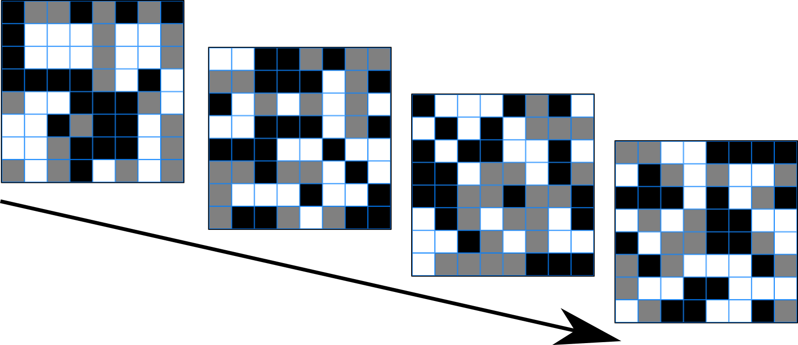

This task will last for exactly 10 minutes. Here's how it works.
On each round, you'll see a sequence of boards, made up of black, white, and grey squares.
On some rounds, you are more likely to see black squares than white squares. On others, you are more likely to white squares than black. Your task is to decide black or white squares are more common on each round. For each round you get right, you win 2c. For each round you get wrong, you lose 1c.
You can wait as long as you like before making your new decision on each round. Every 2 seconds, a new board will be shown, so the longer you wait the more information you will have in order to decide. However, the task will end after ten minutes, so if you spend too long on each round you won't be able to win very much money. It's up to you to decide how long to wait on each round before making your decision.
Sometimes, it will be clear that there are more black or white squares. Other times, they will be quite evenly matched, and the decision will be more difficult.
You give your response using the keyboard. If you think the squares are mostly black, press the F key. If you think the they are mostly white, press the J key.
Finally, after you make your decision on each round, you'll be asked how confident you are, on a scale of 1 to 9, that your response was correct. You can give your response here by pressing the number keys at the top of the keyboard, 1 to 9.
That's it! If you're ready, please click the Start button below to begin. Please note that you can't pause the task once it starts.
Thank you!